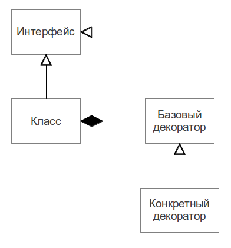

Software design
Программы пишутся для людей
Большую часть стоимости системы составляет её поддержка
В промышленной разработке:
- Системы часто очень большие
- Код пишет множество людей
- Требования постоянно меняются
- Ошибки накапливаются
Очень важно правильное проектирование ПО.
Как съесть слона????77
Слона едят по кусочкам
Проще всего уменьшить сложность приложения - разделить систему на части.
Способности человека к фиксации внимания ограничены. Человек стремится делить задачи на подзадачи.
Борьба со сложностью
- Имеем сложную систему
- Систему делим на компоненты
- Компоненты делить на подкомпоненты
- Классы
- Методы
- Алгоритмы
- ???
- PROFIT!
Борьба со сложностью

Золотой молоток
Я предполагаю, что если единственный инструмент, который вы имеете — молоток, то это заманчиво рассматривать все как гвозди. (Когда у тебя в руках молоток, все задачи кажутся гвоздями.)
Принцип DRY
Don't Repeat Yourself
- Наследование
- Utility classes
- Композиция / Декомпозиция
Принцип KISS
Keep it simple, stupid
илиKeep it short and simple
Принцип YOLO
You only load it once!
SOLID (1/6)
- Single responsibility principle
- Принцип единственной обязанности
- Open/closed principle
- Принцип открытости/закрытости
- Liskov substitution principle
- Принцип подстановки Барбары Лисков
- Interface segregation principle
- Принцип разделения интерфейса
- Dependency inversion principle
- Принцип инверсии зависимостей
Single responsibility (2/6)
Каждый объект должен иметь одну обязанность и эта обязанность должна быть полностью инкапсулирована в класс. Все его сервисы должны быть направлены исключительно на обеспечение этой обязанности.
Пример
java.io.File описывает файл операционной системы. Он имеет методы для создания и удаления файла, а так же для получения информации о нём. Он не содержит никаких других механизмов - чтение, запись, копирование и другие логически сложные действия реализованы в отдельных специализированных классах.
Open/closed principle (3/6)
Классы должны быть открыты для расширения, но закрыты для изменения.
- Наследование от абстрактных базовых классов и/или реализация интерфейса
- Однажды опубликованный интерфейс не должен изменяться
- Реализация интерфейса может изменяться
Пример
Любой поток чтения из java.io раширяет java.io.InputStream. Сам интерфейс, описанный классом InputStream, не изменяется, но библиотека может расширяться за счёт новых его реализаций.
Liskov substitution principle (4/6)
Функции, которые используют базовый тип, должны иметь возможность использовать подтипы базового типа не зная об этом.
- Поведение классов-потомков не должно противоречить поведению, заданному предком
- Проектирование по контракту:
- Предусловия не могут быть усилены в подклассе
- Постусловия не могут быть ослаблены в подклассе
Пример
ArrayList и LinkedList, являющиеся потомками класса List. Как правило мы работаем со списками только через List, не интересуясь тем, какой из его конкретных потомков, нам передан, и ничего не теряем при этом. Обе реализации ведут себя совершенно одинаково.
Interface segregation (5/6)
Клиенты не должны зависеть от методов, которые они не используют.
- Интерфейс должен описывать чётко выделенную обязанность и быть максимально узким
- Клиенты маленьких интерфейсов должны знать только о необходимых им в работе методах.
Пример
InputStream и OutputStream реализуют интерфейс Closeable, отвечающий исключительно за закрытие потока. Мы можем реализовать этот интерфейс в каком-либо своём классе, и все существующие методы безопасного закрытия потока станут применимы и к нему.
Dependency inversion (6/6)
Модули верхних уровней не должны зависеть от модулей нижних уровней. Оба типа модулей должны зависеть от абстракций.
Абстракции не должны зависеть от деталей. Детали должны зависеть от абстракций.
Пример
InputStream никак не зависит от своего конкретного потомка FileInputStream и ничего о нём не знает. Сам FileInputStream зависит от абстракций File и FileDescriptor, но ничего не знает о из внутреннем устройстве.
Шаблоны проектирования
Шаблон проектирования — это архитектурная конструкция, демонстрирующая определённый общепринятый подход к решению группы типовых задач в проектировании.
Если методологии — это философия разработки, то шаблоны — это конкретные технические стандарты.
Фундаментальная книга:
- Gamma, Helm, Johnson, Vlissides (1995). Design Patterns: Elements of Reusable Object-Oriented Software
Все последующие шаблоны приводятся для примера.
Шаблон MVC (Model–View–Controller)
Приложение удобно делить на три изолированные функциональные части:
- Модель
- Классы, описывающие предметную область задачи
- Представление
- Пользовательский интерфейс
- Контроллер
- Логика приложения
Шаблон Decorator (1/3)
Существует возможность расширить функциональность объекта без изменения класса, прозрачно для его клиентов.
Шаблон Decorator (2/3)
public interface A {
String getName();
}
public final class AImpl implements A {
@Override
public String getName() {
return "My name is A";
}
}public class ADecorator implements A {
private final A decoratedObject;
public ADecorator(A decoratedObject) {
this.decoratedObject = decoratedObject;
}
@Override
public String getName() {
return decoratedObject.getName(); // делегирование метода
}
}Шаблон Decorator (3/3)
public class OneADecorator extends ADecorator {
public OneADecorator(A decoratedObject) {
super(decoratedObject);
}
@Override
public String getName() {
return super.getName() + " decorated with Decorator 1"; // дополняем поведение
}
}public class AnotherADecorator extends ADecorator {
public AnotherADecorator(A decoratedObject) {
super(decoratedObject);
}
@Override
public String getName() {
return super.getName() + " decorated with Decorator 2"; // дополняем поведение
}
}